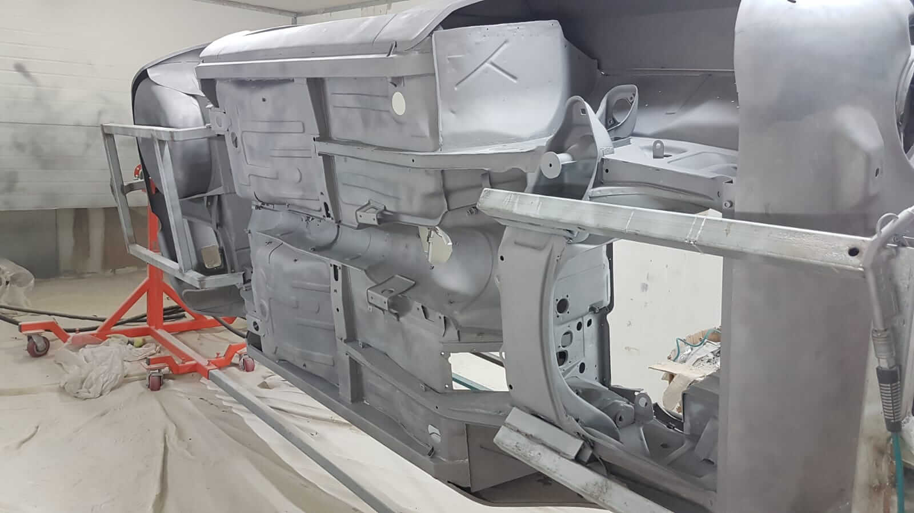
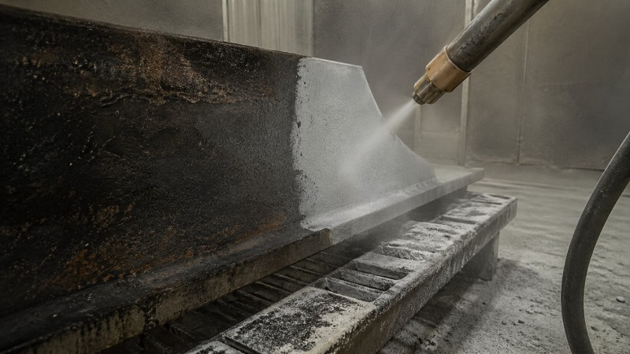

בדיקת החלק
מזהים את סוג החומר, רמת החלודה, שכבות הצבע הישנות והמטרה הסופית של העבודה.
רייטק פועלת שנים בתחום ניקוי חול וצביעה מתקדמת, עם מוניטין של מקצועיות, אמינות ושירות אישי. ניקוי חול הוא שלב מרכזי בחידוש חלקים ובהכנתם לצביעה איכותית: התהליך מסיר חלודה, צבע ישן, לכלוך עיקש ושכבות שהתיישנו, ומביא את החלק למצב נקי, אחיד ומוכן להמשך עבודה.
העבודה מתאימה לחלקי מתכת, אלומיניום, ג׳אנטים, שלדות, חלקי רכב, חלקי אופנועים, פריטי מסגרות וחלקים תעשייתיים. ברייטק בוחנים כל חלק לגופו, מתאימים את עוצמת העבודה ואת שיטת הניקוי לסוג החומר, ומכינים את החלק לתוצאה מדויקת ועמידה.
ניקוי חול הוא תהליך מקצועי להסרת חלודה, צבע ישן, לכלוך קשה ושכבות שחוקות מחלקי מתכת ואלומיניום. העבודה מתבצעת בהתזה מבוקרת של חומר ניקוי ייעודי, בהתאם לסוג החלק, לרמת הלכלוך, לעובי השכבות הישנות ולגימור שאליו רוצים להגיע.
ברייטק מתמחים בעבודות ניקוי חול לחלקי מתכת ואלומיניום, עם ניסיון מעשי בעולמות הרכב, האופנועים, המסגרות והתעשייה. העבודה נעשית מתוך הבנה שהכנת החלק קובעת את איכות הגימור הסופי. חלק שעבר ניקוי מדויק מקבל בסיס נכון יותר לצביעה אלקטרוסטטית באבקה, צבע קרמי או ציפוי נוסף.
כאשר מבצעים ניקוי חול בצורה מקצועית, אפשר לשלוט ברמת הניקוי, בעדינות העבודה ובהכנה הדרושה לצביעה. זו הסיבה שהתהליך מתאים גם לחלקים גדולים כמו שלדות וגדרות, וגם לחלקים קטנים ומדויקים כמו ג׳אנטים, תושבות, חלקי מנוע ופריטי אלומיניום.

ניקוי חול מקצועי מתחיל בבדיקת החלק. בוחנים את סוג המתכת, רמת החלודה, עובי הצבע הישן, מבנה החלק והגימור המבוקש. לאחר מכן בוחרים את שיטת ההתזה, את עוצמת העבודה ואת רמת ההכנה המתאימה. כך מכינים את החלק לצביעה איכותית, תוך שמירה על המבנה שלו ועל התאמה מלאה לשלב הבא.
מזהים את סוג החומר, רמת החלודה, שכבות הצבע הישנות והמטרה הסופית של העבודה.
מתאימים את עוצמת ההתזה ואת אופי העבודה לברזל, אלומיניום, ג׳אנטים או חלקים רגישים.
מסירים חלודה, צבע ישן ולכלוך קשה עד לקבלת חלק נקי, אחיד ומוכן להמשך טיפול.
מכינים את החלק לצביעה אלקטרוסטטית, צבע קרמי או גימור נוסף לפי סוג העבודה.
ניקוי חול מיועד למצבים שבהם צריך להסיר שכבות ישנות ולהכין את החלק להמשך עבודה. זהו פתרון יעיל לחלקים עם חלודה, צבע ישן, קילופים, לכלוך תעשייתי או שכבות שהצטברו לאורך שנים. ברייטק מתאימים את התהליך לפי סוג החלק והיעד: חידוש מראה, הכנה לצביעה, שיקום חלק ישן או טיפול בחלק תעשייתי.
חלודה פוגעת במראה החלק ובאיכות ההכנה לצביעה. ניקוי חול מסיר שכבות חלודה ומאפשר להתחיל תהליך חידוש על בסיס נקי ואחיד יותר.
צבע ישן, מתקלף או שרוף יוצר שכבה שמפריעה לצביעה חדשה. ניקוי חול מסיר את השכבה הישנה ומכין את החלק לקליטת צבע איכותית.
ג׳אנטים דורשים הכנה יסודית לפני צביעה. ניקוי חול מסייע להסיר שכבות ישנות, לכלוך קשה וסימני שחיקה, ולהכין את הג׳אנט לגימור נקי.
שלדות, זרועות, תושבות וחלקי רכב עוברים לעיתים שחיקה ממושכת. ניקוי חול מאפשר לחשוף את המתכת ולהכין אותה לצביעה עמידה.
אלומיניום דורש גישה עדינה ומדויקת. התאמה נכונה של התהליך מאפשרת ניקוי איכותי תוך שמירה על מבנה החלק ועל המראה הסופי.
חלקים תעשייתיים, פריטי ברזל ומוצרי מסגרות זקוקים להכנה טובה לפני צביעה. ניקוי חול מספק בסיס איכותי לגימור חזק ועמיד.
בניקוי חול, אותו תהליך מקבל אופי שונה בכל חלק. ברזל עבה, אלומיניום עדין, ג׳אנט, שלדה, חלק מנוע או פריט תעשייתי - לכל אחד מהם נדרשת רמת עבודה אחרת. ברייטק בוחנים את החלק, מזהים את השכבות שצריך להסיר ומתאימים את שיטת הניקוי לתוצאה המבוקשת.
ההתאמה הזו חשובה במיוחד לפני צביעה אלקטרוסטטית באבקה. החלק צריך להיות נקי, יציב ואחיד, כדי שהצבע ייצמד בצורה טובה וייצור גימור איכותי. ככל שההכנה מדויקת יותר, כך הצביעה מקבלת בסיס מקצועי יותר.
לפני שמוסרים חלק לניקוי חול, כדאי להבין מה רוצים להשיג: הסרת צבע, טיפול בחלודה, הכנה לצביעה, חידוש ג׳אנט, שיקום חלק רכב או טיפול בפריט תעשייתי. הגדרה נכונה של המטרה עוזרת לבחור את שיטת העבודה המתאימה.
ברייטק שמים דגש על בדיקת סוג החומר, רמת החלודה, שכבות הצבע הישנות, אזורים רגישים, פתחים, הברגות, קצוות וחיבורים. עבודה מדויקת שומרת על החלק ומביאה אותו למצב המתאים להמשך התהליך.
.jpeg)

לצד ניקוי חול מקצועי, רייטק מספקת שירותי הכנה, צביעה וציפוי לחלקי מתכת, אלומיניום, רכבים, אופנועים, ג׳אנטים וחלקים תעשייתיים. כך ניתן לבצע את כל שלבי העבודה במקום אחד, משלב הניקוי ועד הגימור הסופי.
לקוחות רייטק מציינים את המקצועיות, השירות, ההסברים, תשומת הלב לפרטים והתוצאה הסופית. בעבודות ניקוי חול, הכנה לצביעה וצביעה, השילוב בין ביצוע מדויק לבין ייעוץ מקצועי יוצר חוויית שירות טובה ותוצאה שמחזיקה לאורך זמן.
כאשר מקצועיות נפגשת עם שירותיות מקבלים את רייטק. היה שווה להגיע לסלעית! חוץ אולי מזינוק בעלייה ברברס… הכול יצא מושלם!
לקוח רייטקמקצוענות, רמת שירות גבוהה, תוצאה מושלמת, עם תשומת לב לפרטים ומחירים הוגנים.
לקוח רייטקמספר אחת!! שירות ללא תחרות. איכות מוצר מעולה ללא פשרות. כחובב שיפוץ רכבי ואופנועי אספנות, ביצעתי אצל גל מספר פרויקטים ותמיד קיבלתי את המוצר הכי טוב שיכולתי לצפות. גל נותן מענה מיידי, תמיד עם חיוך והסבר מקיף, מייעץ מה נכון ומה מתאים לכל עבודה. המקום הכי מקצועי בארץ לניקוי חול וצביעה אלקטרוסטטית.
לקוח רייטקתותחים! עבודות איכותיות ויפות תודה!
לקוח רייטקהרמה הכי גבוהה בארץ. מומלץ מאוד.
לקוח רייטקאין על גל! העסק שלך אליפות. צביעה ברמה, מחזיק שנים במזג האוויר שלנו. גגון שצבעת לפני שלוש שנים עדיין חדש. חלקים של מנוע בן 36 שצבעת עכשיו פשוט נראים חדשים כאילו אתמול יצאו מהמפעל. תודה רבה חבר, בקרוב ג׳נטים אצלך!
לקוח רייטקמקצוען אמיתי! שירות מצוין! מומלץ ביותר.
לקוח רייטקמקצועי, מהיר, איכותי!
לקוח רייטקשירות ויחסי אנוש טובים זה הדבר הכי חשוב לפני הכל.
לקוח רייטקשירות מקצועי במחיר הוגן. שירות אישי חם ואדיב, תודה רבה לגל.
לקוח רייטקניקוי חול הוא תהליך מקצועי להסרת חלודה, צבע ישן, לכלוך קשה ושכבות שהתיישנו מחלקי מתכת ואלומיניום. התהליך מכין את החלק לצביעה, ציפוי או חידוש.
ניקוי חול מכין את החלק לצביעה איכותית. כאשר הצביעה מתבצעת לאחר ניקוי מקצועי, הצבע נאחז טוב יותר והתוצאה מקבלת מראה איכותי ועמידות גבוהה יותר.
משתמשים בניקוי חול לפני צביעה אלקטרוסטטית, לפני חידוש חלקי מתכת, להסרת חלודה, להסרת צבע ישן, לטיפול בג׳אנטים, שלדות, חלקי רכב, חלקי אופנועים וחלקים תעשייתיים.
כן. חלקים עדינים מקבלים התאמה של עוצמת העבודה, שיטת ההתזה ורמת הניקוי, כדי לשמור על מבנה החלק ועל הגימור המבוקש.
ניקוי רגיל מטפל בעיקר בלכלוך חיצוני. ניקוי חול מטפל בשכבות עמוקות יותר כמו חלודה, צבע ישן ושאריות קשות, ולכן הוא מתאים להכנה מקצועית לפני צביעה.
חשוב לבדוק את סוג החומר, רמת החלודה, שכבות הצבע הישנות, אזורים רגישים, הברגות, פתחים, קצוות והגימור הסופי המבוקש. בדיקה נכונה בתחילת העבודה משפרת את איכות התוצאה.
ברייטק מבצעים ניקוי חול מתוך הבנה של החומר, סוג החלק והגימור הרצוי. התהליך כולל בדיקה, התאמת שיטת עבודה, הסרת חלודה וצבע ישן, והכנה מדויקת לצביעה אלקטרוסטטית, צבע קרמי או ציפוי מתקדם.